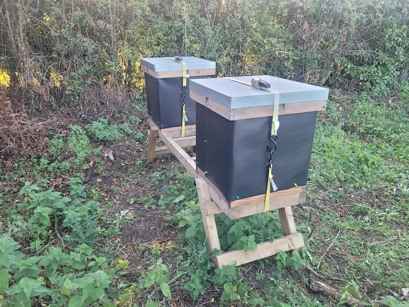

A Year in the Apiary - December Beekeeping Tasks (UK)
December overview – the quietest month in the apiary
December is often the quietest month in the UK beekeeping year. The days are short, temperatures are low, and your colonies spend most of their time clustered inside the hive. By now, all major manipulations should be complete – varroa treatments are finished or planned, feeding has been done, and hives have been secured against wind and weather.
Your main role this month is to monitor without disturbing. You will check hive weight by hefting, watch entrances on mild days and ensure that stands, straps and roofs are coping with winter storms. Inside the hive, winter bees are quietly burning stores to keep the cluster warm, waiting for the first signs of spring.
If you follow the full Year in the Apiary, December continues the winter phase begun in November, with very little reason to open hives – but still plenty to learn, plan and observe.
Checking winter stores and using fondant

Even though you are not inspecting frames in December, you still need to know whether each colony has enough food. A typical full-sized hive in the UK may need around 20–25 kg of stores to reach spring, depending on hive type, strain and local conditions.
You can assess stores without opening hives by:
- Hefting hives from the back or one side to judge weight, comparing between colonies and against your previous notes.
- Noting any colonies that already felt light in October or November, as these are more likely to need extra support.
By December it is generally too cold for additional syrup feeding in most parts of the UK. Instead, beekeepers rely on fondant as a top-up or emergency feed:
- Keep fondant ready so you can react quickly when a hive feels light.
- Add fondant on a calm, cool but not bitterly cold day, working swiftly to avoid chilling the cluster.
- Place the fondant block directly above the cluster, on the crownboard over the feed hole or on top of the frames, using an eke or empty super to provide space.
- Cut a slit in the wrapping so bees can access it while the rest stays protected from drying out.
Signs that a colony may be at risk of starvation include very light hefting, bees searching frantically around the apiary on rare flying days or an unusually large number of dead bees near the entrance. In such cases, action should be taken promptly with fondant or a suitable alternative feed.
Planning and timing oxalic acid varroa treatment
Most UK beekeepers now include a mid-winter oxalic acid treatment as part of their varroa management plan. Oxalic acid is most effective when the colony is brood-light or broodless, as mites have fewer capped cells in which to hide.
In many parts of the UK, the ideal window is often late December to early January, but exact timing varies with weather and colony behaviour. Some years the broodless period is short or may shift earlier or later.
Key points to consider (always following approved products and official guidance):
- Build oxalic acid into your wider Varroa Management plan rather than treating ad-hoc.
- Use authorised products and methods appropriate for your region and follow manufacturer instructions exactly.
- Many beekeepers choose a calm day around the festive period when temperatures are cool but not extreme, to minimise disturbance.
- Keep the hive open for the shortest possible time; preparation and efficiency are essential.
Your local association or official resources such as BeeBase can help you stay up to date with current recommendations and legal requirements.
Condensation, insulation and managing moisture
In mid-winter, condensation can be as dangerous as cold. Bees generate warmth and moisture as they consume stores. If that warm, moist air hits a cold surface – such as an uninsulated roof – it condenses and can drip back onto the cluster.
Good winter management aims for warm bees in a cool, dry hive:
- Ensure roofs are sound and ideally insulated above the crownboard, especially on wooden hives.
- Keep a small, clear entrance open so moist air can escape, taking care not to block it with snow or dead bees.
- Tilt hives slightly forwards so any moisture runs out of the entrance instead of pooling inside.
- Avoid completely sealing hives. Over-wrapping and blocking ventilation can trap moisture, causing more harm than controlled airflow.
Poly hives have excellent insulation built in, but still need sound roofs and clear entrances. Wooden hives benefit from extra insulation above the cluster and careful control of draughts. For more detail on keeping equipment in good condition, see Hive Hygiene.
Winter pests: mice, woodpeckers and others
By December, many pests are less active – but some threats remain. In the UK, mice and woodpeckers are the main concerns during cold spells.
Mice:
- Mouse guards should already be fitted; check they remain secure after bad weather.
- Look for gnaw marks, disturbed debris or other signs that rodents have tried to enter.
- Keep the area around hive stands tidy to reduce hiding spots.
Woodpeckers:
- In areas where woodpeckers are present, protective wire mesh or netting around hives can reduce pecking damage.
- Hives isolated in quiet woodland are more at risk; clustering hives or adding visual barriers can help.
Other small visitors, such as slugs or woodlice, are usually more of a nuisance than a threat, but general good hygiene and tidy stands help keep problems to a minimum. For broader disease and pest information, see Bee Diseases and Pests.
When to leave the bees completely alone
A key winter skill is knowing when not to intervene. In December, there will be long stretches where the best thing you can do is leave the bees to get on with it.
You should generally leave hives closed when:
- Temperatures are very low or there is hard frost, snow or driving rain.
- You have no urgent reason to open them – no planned oxalic treatment and no immediate feeding emergency.
- Hives feel acceptably heavy on hefting and external checks show nothing unusual.
Reserve any opening for specific tasks such as placing fondant or carrying out an oxalic acid treatment, and even then, work quickly and gently. Much of your December beekeeping can be done simply by observing from outside.
Health red flags in December
Although detailed disease checks are difficult without opening the hive, there are a few warning signs you can watch for in winter:
- Large numbers of dead bees outside one hive compared with others.
- Bees crawling on the ground that cannot fly, particularly on mild days.
- Persistent loud roaring from inside the hive, which may suggest queen problems or other stress.
- Strong unpleasant smells around a specific hive, or obvious equipment damage.
If you are concerned, seek advice from your association or a local inspector where appropriate. Our pages on Bee Diseases and Hive Hygiene are good background reading for the quieter months.
Suggested winter timelines and checks
Exact timing will vary by location and weather, but many UK beekeepers follow a pattern similar to this:
- Early December: Heft hives, check straps, stands and roofs after any early storms. Confirm mouse guards and entrances are clear.
- Mid-December: Continue occasional hefting. Prepare equipment and plan the date and method for your oxalic acid treatment.
- Late December to early January: Choose a suitable day for oxalic acid treatment when colonies are likely to be brood-light, if this is part of your plan, and top up fondant on any light colonies.
- After heavy storms or snow: Check apiary access, clear entrances, straighten stands or roofs if necessary and verify that hives are still secure.
These checks, combined with good records and a consistent approach across your apiary, help you spot problems early and support your bees through the hardest part of the year.
Planning, records and learning for next season
With hive manipulations at a minimum, December is an ideal time to focus on planning and education. Your records from the year – whether in a notebook or in a digital system such as the BeezKnees HiveTag members area – are now especially valuable.
- Review which colonies were strong, gentle and productive, and which need improvement or requeening.
- Note any equipment shortages you encountered so you can order in good time.
- Plan your approach to hive management for the coming season, including swarm control and disease monitoring.
You can also use December to study. Explore the guides in the Beekeeping section, attend association talks or start a study group. Your bees may be quiet, but your beekeeping knowledge does not have to be.
Thinking ahead about forage and the garden
While much planting is done earlier in autumn, December is still a good time to think about forage for the spring and summer ahead:
- Finish planting any remaining spring bulbs where soil conditions allow.
- Plan changes to your borders or apiary surroundings using ideas from Bee Gardening.
- Think about shrubs and trees that bloom at different times of the year to support bees and other pollinators.
Even small changes can improve forage diversity and help your colonies when they begin to build up in early spring. For broader ideas on supporting pollinators, see Help the Bees.
December winter safety checklist
Use this checklist as a quick review of each apiary visit:
- ✔ Hives feel appropriately heavy when hefted, or fondant prepared for light colonies.
- ✔ Mouse guards secure and entrances clear of snow, dead bees or debris.
- ✔ Roofs sound, watertight and strapped or weighted down.
- ✔ Stands stable, level and not sitting in standing water.
- ✔ No obvious signs of woodpecker damage or vandalism.
- ✔ Oxalic acid treatment planned for a suitable brood-light period if used.
- ✔ Records updated briefly after each visit – even just weight impressions and weather notes.
Common beginner mistakes in December
- Opening hives too often out of curiosity, chilling the cluster and breaking propolis seals.
- Failing to monitor weight and missing the early signs of starvation.
- Delaying or forgetting mid-winter oxalic treatment where it is part of the plan.
- Over-wrapping hives and inadvertently trapping moisture inside.
- Ignoring damaged roofs, loose straps or unstable stands after winter storms.
- Putting off record-keeping and planning until spring instead of using the quiet time well.
If you are unsure, talk to your local association or mentor, and revisit guides on Hive Management, Varroa Management, Hive Hygiene and Bee Gardening.
December beekeeping FAQs (UK)
What are the main beekeeping tasks in December in the UK?
Your main tasks are checking hive weight by hefting, topping up light colonies with fondant, planning and carrying out an oxalic acid treatment at an appropriate time, watching for condensation or storm damage and reviewing your records and plans for next season.
When should I treat with oxalic acid?
Many UK beekeepers treat once in mid-winter when colonies are brood-light or broodless, often between late December and early January. Always follow approved products, legal guidance and manufacturer instructions, and integrate treatment into your wider varroa management plan.
How do I put fondant on a hive without chilling the bees?
Choose a calm day, have everything ready, gently lift the roof and any empty super or cover, place the fondant directly over the cluster (typically on the crownboard feed hole or frames), replace the eke or super and close up promptly.
Should I open my hives for a full inspection in December?
No. Full inspections are not appropriate in December. Monitoring is done from outside; only open a hive briefly for a clear purpose, such as adding fondant or carrying out a planned oxalic treatment.
How can I tell if condensation is a problem?
From outside, look for signs such as water staining or persistent damp smells. Inside, which you may only see briefly, condensation on the roof or mouldy frames suggests moisture is not being managed well. Improving insulation above the cluster and maintaining a small open entrance usually helps.
Do bees fly at all in December?
On mild, sunny days you may see small numbers of bees taking short cleansing flights. This is normal. Long periods with no flight at all can be normal in very cold spells, provided hives remain heavy and secure.
What should I be learning or planning in December?
Review your records, decide which colonies you might breed from, plan equipment purchases, explore the Beekeeping Guides and consider joining winter study groups or association events to build your knowledge ready for spring.